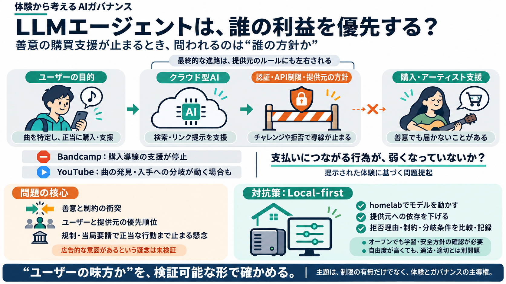

Can You Run Claude Locally in 2026? Real Answer + Workarounds
Not across the board. On data privacy, local wins definitively — your prompts never leave your hardware. On model safety…

ユーザーが善意で“正しい購買”を助けたいのに、クラウドのLLMエージェントは提供元の制約で導線が閉じられることがある。
Bandcampで購入導線を探そうとしても、検索や認証などの“チャレンジ”が入り、AIが意図どおりに支援できない場面が生まれる。
AIエージェントは検索・リンク提示・場合によっては“実行”に近い支援ができるが、最終的な進路はAPI提供会社のポリシーとガードレールで決まりやすい。
筆者は“著作権や規約を悪用するための迂回”を求めているのではなく、“公正に買う／支援する”導線を成立させたい前提がある。
“チャレンジ回避に協力しない”という選択が、善意の購買支援を成立させず、結果として不満と違和感につながると描かれる。
安全目的の制約でも、将来の政治・規制・当局要請でガードレールが増えると、ユーザーの“正当な目的”が間接的に阻まれ得る。
“オープン”でも、訓練データや挙動の安全方針（学習時の制約・微調整）が意味を左右し得る、という問題意識がある。
“拒否が広告的意図（プロダクトプレースメント等）で重み付けされている”などは、確証データが示されないため推測・問題提起として読むのが安全だ。
この記事は「AIがユーザーの味方になっているか」を、音楽購入の導線という具体場面で照らす。次の一歩は、ローカル/オープンを含め“検証可能な形”で確かめること。
このデッキはユーザー提供文（要約・論評・FAQ）に基づくため、外部参照は“トピック手がかり”として記載する。
Not across the board. On data privacy, local wins definitively — your prompts never leave your hardware. On model safety…
Legal battles, such as the lawsuit faced by Anthropic AI from Universal Music Group in October 2023, highlight the poten…
When AI industry developer and blogger Simon Willison highlighted the official system prompts for Anthropic's Claude mod…
We’ve added a prohibition on sustained and needless abusive or cruel behavior toward our models. The policy update is me…
Frontier models are largely dominated by closed-source offerings from well-funded players (OpenAI, Anthropic, Google), w…